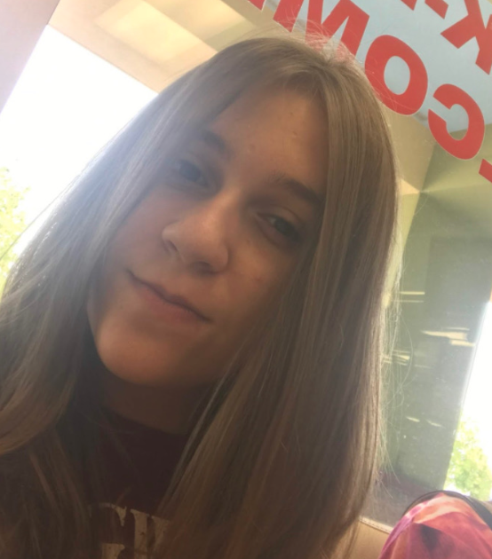

Learn about FEMancial and the team
FEMancial is a website that is here to help new female entrepreneurs establish and anchor the roots to their business. We provide information and resources for managing finances, connecting with other small businesses, and more to women who are planning on starting a business or have recently started one.
Hi! I’m Hannah, I am a 19 year old from Illinois. This is my first time at Technica but my second hackathon!
Hi, I'm Jo and FEMancial is my first hackathon entry! I am an a eigth grader from Georgia :)
Hello, I'm Trinity! I am a sophomore from North Carolina. This is my eighth hackathon, and my second time at Technica.
Establishing a business
Here are networking sites made specifically for women business owners:
One of the most necessary and used means of advertising is social media. It's important to establish your business on one platform and branch out to other platforms to boost your business. Using networking sites such as The EveryWoman Network (listed above) to reach out to other businesses that are similar to your business's background.
If you can't water your plant, it doesn't grow
The plan answers these five questions: Who are We? What do we want to do? How do we want to do it? How are we going to finance it?
Managing your business
At some point in your wonderful journey of creating or furthering your small business you will more often than not need some sort of short term cash flow. Depending on your type of business every lender has different qualifications, so it's important to note the differences of each type of loan that way you can make the best decision for your business. Here is a link to simple steps you can use to get a small business loan.
The easiest way to have a successful business is to start things off early! Whether that's saving, investing, or tracking your finances. Here is a link to some great habits to start off with.
Not only will your small business look more professional by having a separate business bank account but it will also make it easier by keeping future bookkeeping of finances organized and accurate. Below is a link to some recommended Business Checking Accounts for small businesses.
Statistics About Women in Business